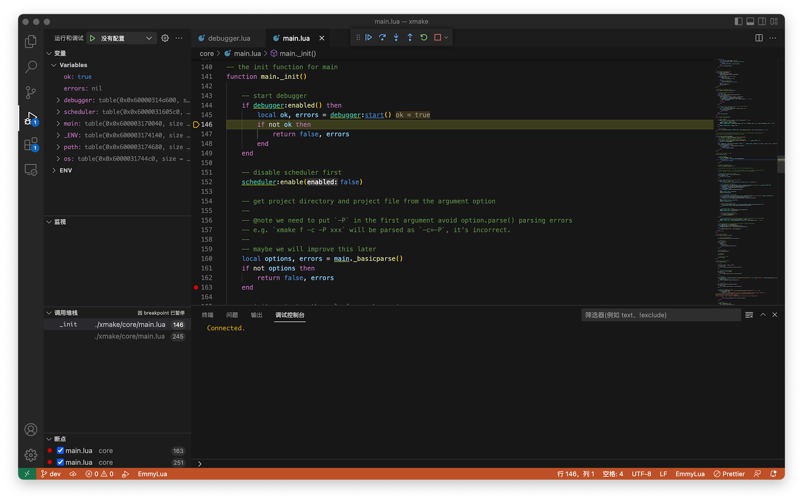
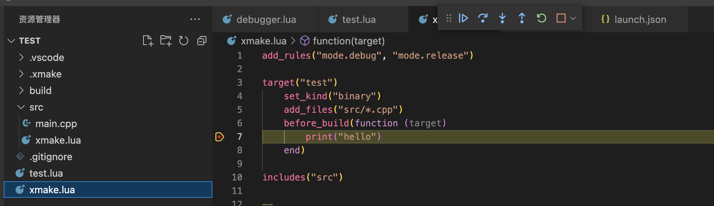
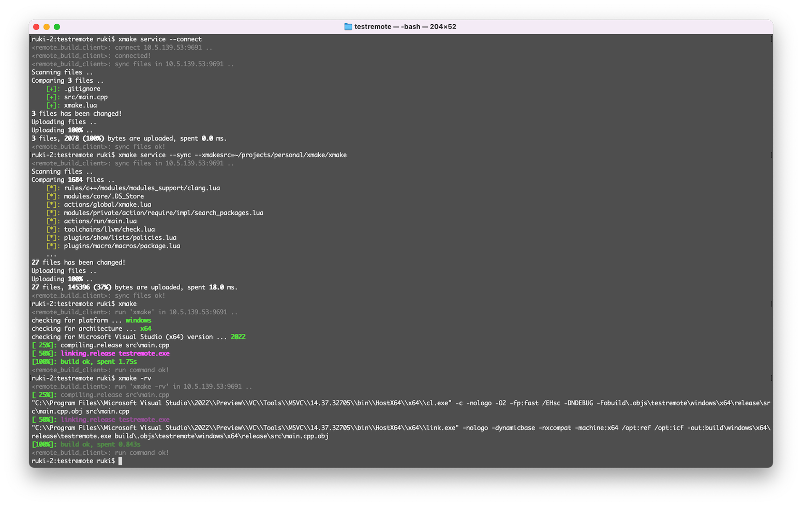

FAQ
怎样获取更多参数选项信息？
获取主菜单的帮助信息，里面有所有 action 和 plugin 的列表描述。
$ xmake [-h|--help]
获取配置菜单的帮助信息，里面有所有配置选项的描述信息，以及支持平台、架构列表。
$ xmake f [-h|--help]
获取 action 和 plugin 命令菜单的帮助信息，里面有所有内置命令和插件任务的参数使用信息。
$ xmake [action|plugin] [-h|--help]
例如，获取 run 命令的参数信息 :
$ xmake run --help
怎样实现静默构建，不输出任何信息？
$ xmake [-q|--quiet]
如果 xmake 运行失败了怎么办？
可以先尝试清除下配置，重新构建下：
$ xmake f -c
$ xmake
如果还是失败了，请加上 -v 或者 --verbose 选项重新执行 xmake 后，获取更加详细的输出信息
例如：
$ xmake [-v|--verbose]
并且可以加上 -D 选项获取出错时的 xmake 的调试栈信息和其他更详细的诊断信息 , 然后你可以提交这些信息到 issues。
$ xmake -v -D
怎样看实时编译警告信息 ?
为了避免刷屏，在构建时候，默认是不实时输出警告信息的，如果想要看的话可以加上 -w 选项启用编译警告输出就行了。
$ xmake [-w|--warning]
怎样基于源码自动生成 xmake.lua？
如果你想临时写一两个测试代码、或者手上有一些移植过来的零散源码想要快速编译运行，可以不用专门写 xmake.lua，直接运行：
$ xmake
xmake 会自动扫描分析当前的源码目录，识别程序结构和类型，生成一个 xmake.lua，并且会尝试直接构建它。
如果编译成功，可以直接运行：
$ xmake run
当然，如果仅仅只是想要生成 xmake.lua，默认不去构建，可以执行：
$ xmake f -y
更多相关介绍，请参考文章：xmake 新增智能代码扫描编译模式，无需手写任何 make 文件
为什么 xmake.lua 会被执行多遍？
xmake.lua 里面分描述域和脚本域，在描述域里面会对各种配置域进行分阶段多次解析，有可能会执行多遍，因此不要在描述域写复杂的脚本。
如果要写各种复杂脚本，请在脚本域内进行配置，target/on_load 的脚本域里面同样可以灵活配置各种 target 相关设置，并且提供更强大的 lua 脚本模块支持。
更多细节见：描述语法说明
如何调试 Xmake 源码?
下载源码
由于 xmake 使用了 git submodules 维护子模块，因此我们可以通过下面几种方式拉取完整源码。
使用 git 拉取
$ git clone --recursive https://github.com/TOMO-CAT/xmake.git
或者
$ git clone https://github.com/TOMO-CAT/xmake.git
$ git submodule update --init
从 Github Releases 下载源码包
由于 github 本身的 downloads 附件下载不支持归档 submodules，因此 Xmake 每次发版都会完整打包一份额外的 tar 包源码上传到 Releases 上。
因此，不要下载错误的链接地址
- 不完整源码：https://github.com/TOMO-CAT/xmake/archive/refs/tags/v3.0.4.tar.gz
- 完整源码包：https://github.com/TOMO-CAT/xmake/releases/download/v3.0.4/xmake-v3.0.4.tar.gz
wget https://github.com/TOMO-CAT/xmake/releases/download/v3.0.4/xmake-v3.0.4.tar.gz
tar -xvf xmake-v3.0.4.tar.gz -C xmake
cd xmake
Xmake 的 tar 源码包没有顶层 xmake 根目录，因此解压时候最好带上
-C xmake指定下输出目录。
编译源码
类 unix 平台环境编译 Xmake，我们只需要在源码根目录执行 make 就行了。
$ cd xmake
$ ./configure
$ make
加载调试
如果编译完成，我们就可以加载刚刚编译好的 Xmake 二进制 core 程序，然后运行本地的 Lua 脚本了。
在 Linux/macOS/FreeBSD 上只需要运行：
$ cd xmake
$ source scripts/srcenv.profile
就能进入本地源码调试环境。
我们也可以运行：
$ xmake l os.programdir
来验证我们是否真的加载了本地的 Lua 脚本环境。
调试 core 二进制
通常调试 Xmake 的 Lua 脚本，只需要直接修改当前源码目录的 Lua 脚本就行了，实时生效的，我们并不需要重复编译 core 二进制。
但是如果是 Xmake 的 C 端 core 程序有问题，需要调试或者加模块，那么就需要重复编译了。
编译完成，也是实时生效的，我们可以在 C 代码里通过：
xu_trace_i("hello %s", "xmake");
来格式化打印各种输出。
如果是 sv 等 Xmake 依赖的各种 submodules 子模块有问题，需要调试。
我们也可以直接进入子模块源码，修改后重新编译执行。
但是，如果需要贡献修复补丁，我们需要提交 pr 给子模块的仓库才行，补丁合并后，作者会在特定时间同步到到 xmake 源码仓库。
断点调试
xmake 也支持 Lua 断点调试支持，配合 VSCode-EmmyLua 插件，我们可以很方便的在 VSCode 中断点调试 xmake 自身源码。
首先，我们需要在 VSCode 的插件市场安装 VSCode-EmmyLua 插件，然后执行下面的命令更新下 xmake-repo 仓库保持最新。
xrepo update-repo
Xmake 也需要保持最新版本。
然后，在自己的工程目录下执行以下命令：
$ xrepo env -b emmylua_debugger -- xmake build
其中 xrepo env -b emmylua_debugger 用于绑定 EmmyLua 调试器插件环境，而 -- 后面的参数，就是我们实际需要被调试的 xmake 命令。
通常我们仅仅调试 xmake build 构建，如果想要调试其他命令，可以自己调整，比如想要调试 xmake install -o /tmp 安装命令，那么可以改成：
$ xrepo env -b emmylua_debugger -- xmake install -o /tmp
执行完上面的命令后，它不会立即退出，会一直处于等待调试状态，有可能没有任何输出。
这个时候，我们不要急着退出它，继续打开 VSCode，并在 VSCode 中打开 Xmake 的 Lua 脚本源码目录。
也就是这个目录：Xmake Lua Scripts，我们可以下载的本地，也可以直接打开 Xmake 安装目录中的 lua 脚本目录。
然后切换到 VSCode 的调试 Tab 页，点击 RunDebug -> Emmylua New Debug 就能连接到我们的 xmake build 命令调试端，开启调试。
如下图所示，默认的起始断点会自动中断到 debugger:_start_emmylua_debugger 内部，我们可以点击单步跳出当前函数，就能进入 main 入口。

然后设置自己的断点，点击继续运行，就能中断到自己想要调试的代码位置。
我们也可以在项目工程的配置脚本中设置断点，也可以实现快速调试自己的配置脚本，而不仅仅是 xmake 自身源码。

远程调试
xmake 也能支持远程调试，在虚拟机中调试往往体验不佳，因此通常会远程连到其他主机上去调试 xmake 源码。
我们先在远程机器上开启远程编译服务：
$ xmake service
然后本机打开需要构建的工程目录，执行远程连接，然后执行 xmake service --sync --xmakesrc= 去同步本地源码：
$ xmake service --connect
$ xmake service --sync --xmakesrc=~/projects/personal/xmake/xmake/
$ xmake build
$ xmake run
这样，我们就能本地修改 xmake 脚本源码，然后同步到远程机器上，再远程执行 xmake 构建命令获取对应的调试输出，以及分析构建行为。
我们也能够通过 xmake service --pull= 命令，回拉远程的文件到本地，进行分析。
注：详细的远程编译特性说明，见 远程编译文档。

如何调试仓库包?
调试的方式有很多种，这里我主要介绍最常使用的调试方式，那就是直接拉取 xmake-repo 仓库来调试。
$ git clone https://github.com/xmake-io/xmake-repo.git
$ xmake l scripts/test.lua -vD --shallow zlib
使用上面 test.lua 脚本命令来调试包，我们可以重复安装测试指定的包，--shallow 告诉 xmake 每次测试不去重复完整安装它的所有依赖包，仅仅测试按照当前包。
我们也可以测试指定的平台，架构，编译模式， vs_runtime 和动态库，静态库等等。
$ xmake l scripts/test.lua -vD --shallow -p mingw --mingw=/xxx/sdk zlib
$ xmake l scripts/test.lua -vD --shallow -p iphoneos -a arm64 zlib
$ xmake l scripts/test.lua -vD --shallow -k shared --vs_runtime=MD zlib
$ xmake l scripts/test.lua -vD --shallow -m debug zlib
调试本地包源码
有时候，由于包的源码和构建脚本有问题，我们需要修改一些代码才能继续测试安装，如果通过 add_patches/io.replace 的方式在 on_install 里面去修改调试，非常繁琐。
因此，我们可以通过指定 -d package_sourcedir 方式，直接让测试脚本进入我们预先下载好的包源码目录，测试编译安装，我们每次的代码修改不会被重置。
$ xmake l scripts/test.lua -vD --shallow -d /tmp/zlib-1.2.11 zlib
等修改调试通过后，我们再根据改动，通过 git diff > fix.patch 生成补丁文件，通过 add_patches 配置应用补丁包，来修复包的安装。
远程调试包源码
我们也可以远程调试包，先开启远程服务：
$ xmake service
然后传入 --remote 参数，即可实现远程包编译测试。
$ xmake l scripts/test.lua -vD --shallow --remote /tmp/zlib-1.2.11 zlib
下载包提示证书校验失败怎么办？
curl: (60) SSL certificate problem: unable to get local issuer certificate
More details here: https://curl.se/docs/sslcerts.html
curl failed to verify the legitimacy of the server and therefore could not
establish a secure connection to it. To learn more about this situation and
how to fix it, please visit the web page mentioned above.
如果你在使用 Xmake 安装依赖包时候，遇到上面的证书验证问题，你可以尝试更新 curl 证书去修复它，或者直接全局配置禁用证书验证来绕过它。
$ xmake g --insecure-ssl=y
当然，禁用证书验证会带来一定的安全性风险，不过好在 xmake-repo 仓库中的包，有严格的 sha256 校验，即使下载被劫持，最终也会 xmake 的 sha256 校验检测到，作为无效下载。